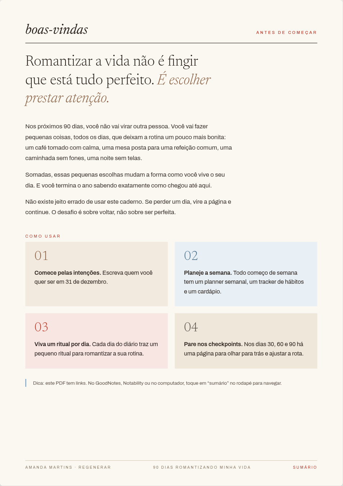
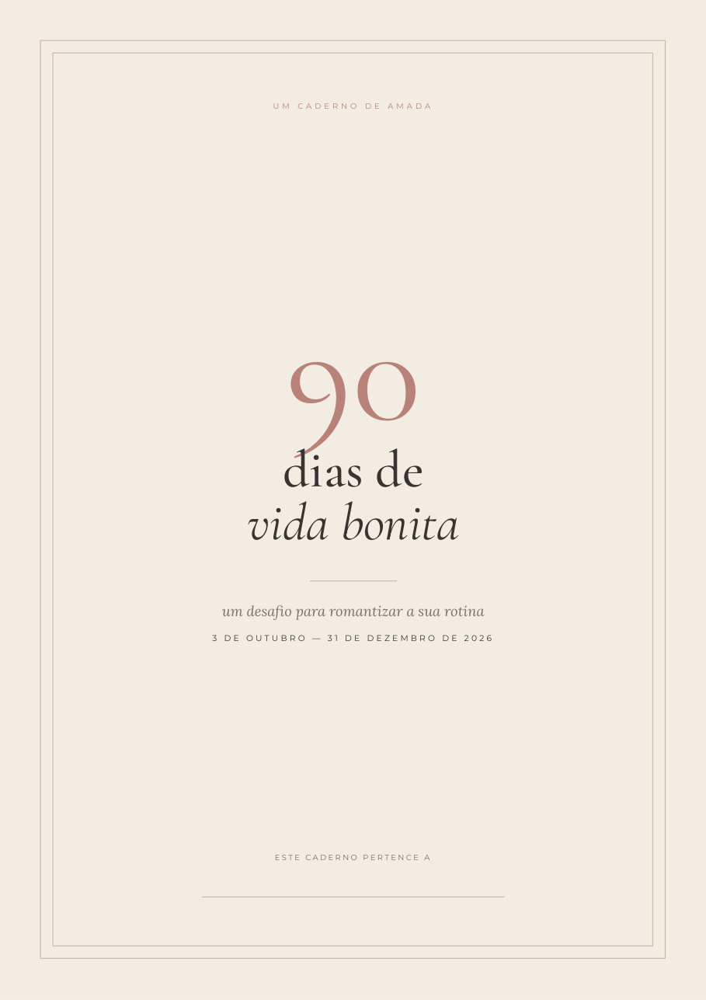
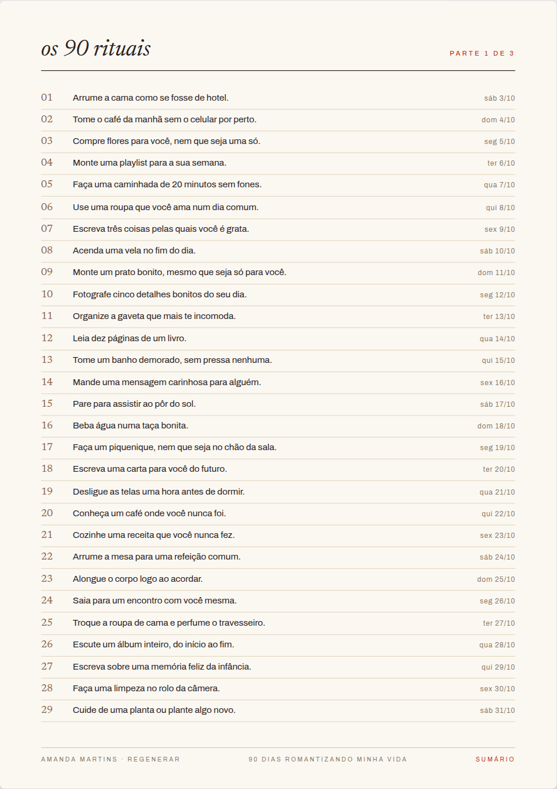
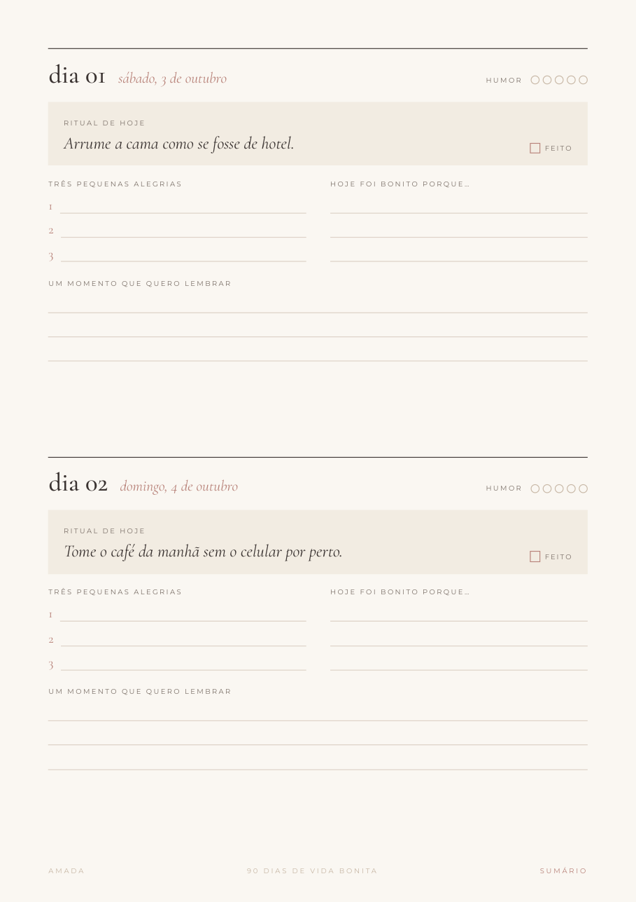
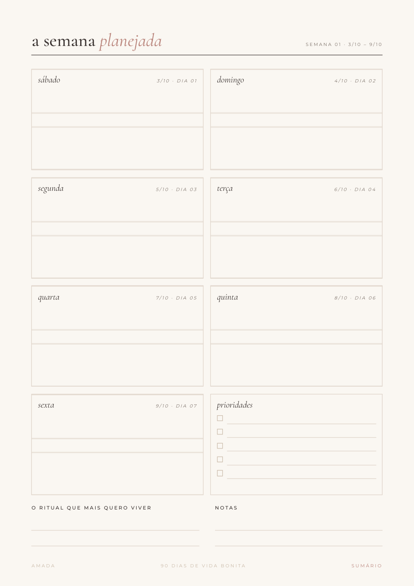
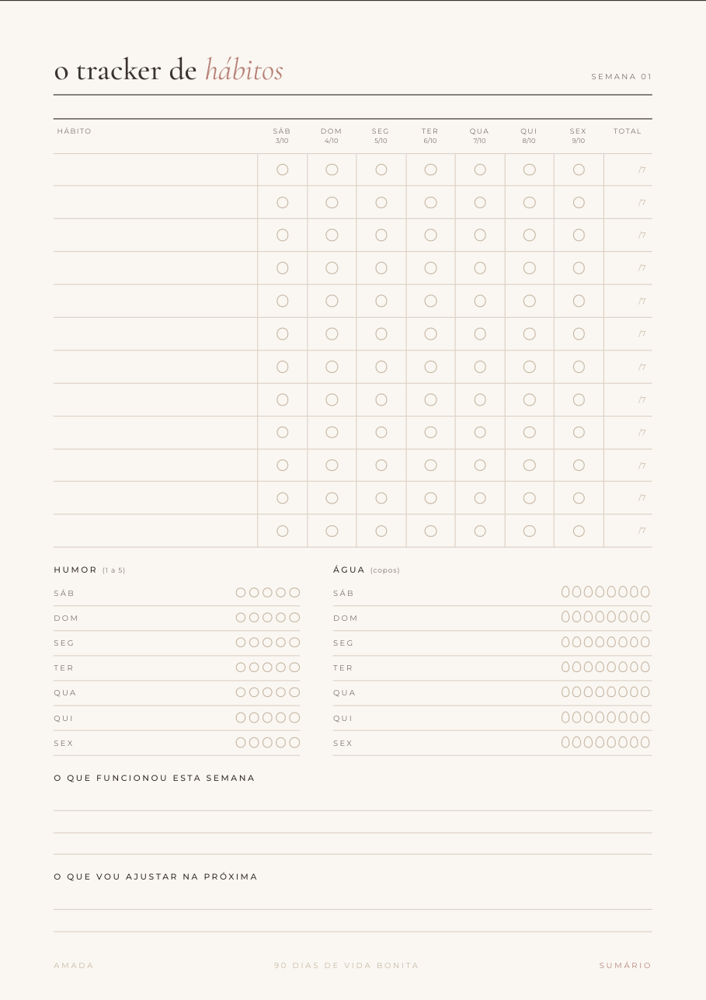
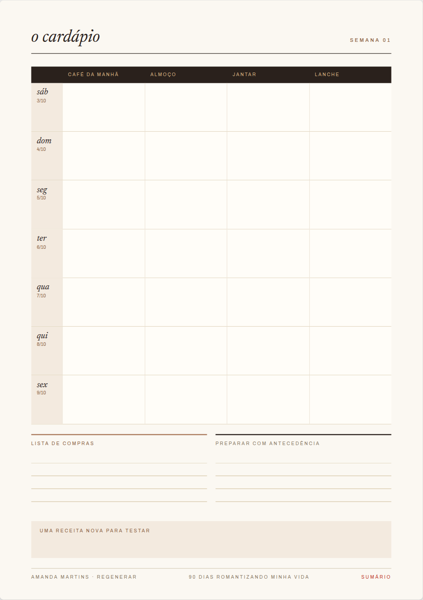
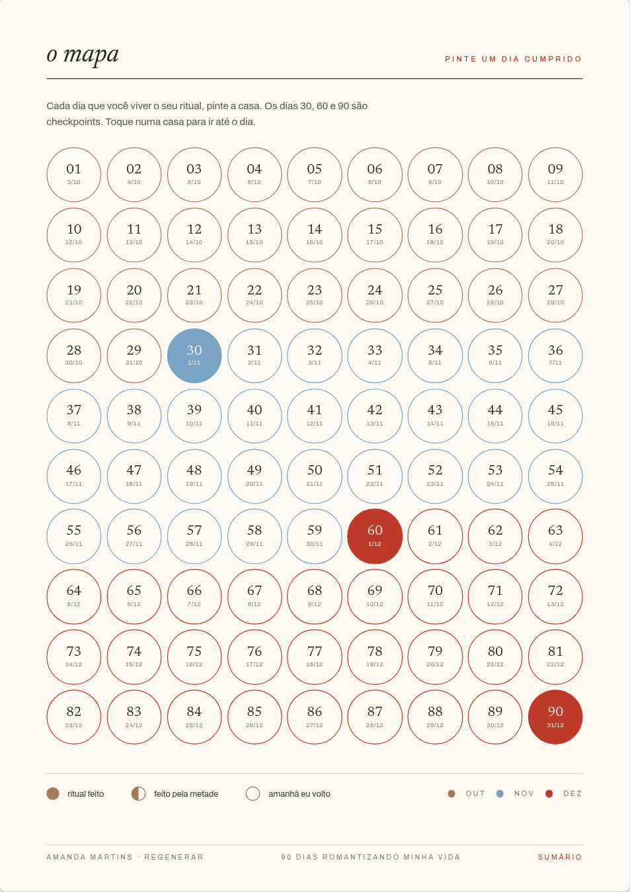
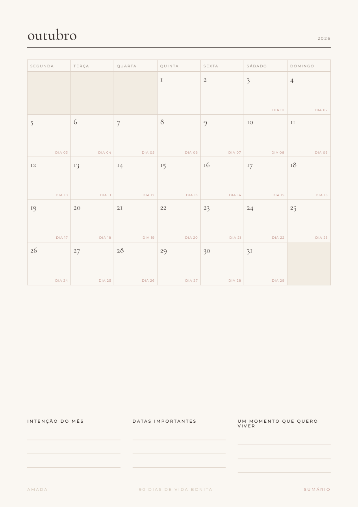

<title>90 Dias Romantizando Minha Vida</title>
<meta name="description" content="Um caderno digital da Regenerar, por Amanda Martins: 90 dias escolhendo melhor, cuidando da pele, do corpo e da rotina. De 3 de outubro a 31 de dezembro.">
<link rel="preconnect" href="https://fonts.googleapis.com">
<link rel="preconnect" href="https://fonts.gstatic.com" crossorigin>
<link rel="stylesheet" href="https://fonts.googleapis.com/css2?family=Newsreader:ital,opsz,wght@0,6..72,300;0,6..72,400;1,6..72,300;1,6..72,400&family=Archivo:wght@400;500;600&family=Ephesis&display=swap">
<style>
/* Layout: o topo repete a capa do ebook (terracota, círculos, "90" enorme); o resto é a página creme do caderno, com o mapa dos 90 dias no centro e a oferta como uma folha destacada. */
/* Cores e fontes tiradas do ebook "90 dias romantizando minha vida" (Regenerar). Um visual só, claro. */
:root {
  --papel: #FBF8F2;
  --creme: #F3EADF;
  --areia: #EDE5D8;
  --tinta: #2A211C;
  --texto: #5B5348;
  --suave: #8A7A66;
  --terracota: #A9795A;
  --terracota-claro: #B98A6A;
  --cacau: #8D725D;
  --vermelho: #BE3A2B;
  --azul: #79A3C3;
  --azul-escuro: #4F7590;
  --azul-claro: #E9F0F5;
  --rosa: #F7E6E2;
  --linha: #D6CBB6;
  --sombra: rgba(42, 33, 28, .18);
  --display: 'Newsreader', Georgia, 'Times New Roman', serif;
  --corpo: 'Archivo', 'Helvetica Neue', Arial, sans-serif;
  --assinatura: 'Ephesis', 'Brush Script MT', cursive;
  color-scheme: light;
}

* { box-sizing: border-box; }
html { scroll-behavior: smooth; }
@media (prefers-reduced-motion: reduce) { html { scroll-behavior: auto; } * { transition: none !important; } }
body { margin: 0; background: var(--papel); color: var(--tinta); font-family: var(--corpo); font-size: 16.5px; line-height: 1.7; -webkit-font-smoothing: antialiased; }
img { max-width: 100%; height: auto; display: block; }
a { color: inherit; }
:focus-visible { outline: 2px solid var(--vermelho); outline-offset: 3px; }

.wrap { max-width: 1080px; margin: 0 auto; padding-inline: 20px; }
.estreito { max-width: 640px; }
section { padding-block: 88px; }
section + section { border-top: 1px solid var(--linha); }

.rotulo { font-family: var(--corpo); font-size: 11px; font-weight: 500; letter-spacing: .28em; text-transform: uppercase; color: var(--vermelho); }
h1, h2, h3 { font-family: var(--display); font-weight: 300; line-height: 1.05; text-wrap: balance; margin: 0; }
h2 { font-size: clamp(38px, 6vw, 58px); }
h2 em { font-style: italic; color: var(--terracota); }
p { margin: 0; }

.botao { display: inline-flex; align-items: center; justify-content: center; gap: 10px; background: var(--vermelho); color: var(--papel); text-decoration: none; font-family: var(--corpo); font-size: 12.5px; font-weight: 600; letter-spacing: .2em; text-transform: uppercase; padding: 18px 30px; border-radius: 2px; transition: transform .2s, box-shadow .2s; }
.botao:hover { transform: translateY(-2px); box-shadow: 0 10px 24px var(--sombra); }

.logo { width: 42px; height: 24px; flex: none; }

/* topo */
.topo { position: sticky; top: env(safe-area-inset-top, 0px); z-index: 10; background: color-mix(in srgb, var(--papel) 94%, transparent); backdrop-filter: blur(8px); border-bottom: 1px solid var(--linha); }
.topo .wrap { display: flex; justify-content: space-between; align-items: center; padding-block: 12px; gap: 12px; }
.marca { display: flex; align-items: center; gap: 12px; font-size: 11.5px; font-weight: 500; letter-spacing: .32em; text-transform: uppercase; color: var(--tinta); line-height: 1.35; }
.marca small { display: block; font-size: 10px; letter-spacing: .28em; color: var(--suave); }
.topo .botao { padding: 11px 18px; font-size: 11px; }

/* capa (igual à do ebook) */
.capa { background: var(--terracota); color: var(--tinta); position: relative; overflow: hidden; padding-block: 72px 88px; }
.capa::before, .capa::after { content: ""; position: absolute; border-radius: 50%; }
.capa::before { width: 760px; height: 760px; right: -220px; top: 60px; background: var(--terracota-claro); }
.capa::after { width: 540px; height: 540px; right: -150px; top: 170px; background: var(--cacau); }
.capa .wrap { position: relative; z-index: 1; display: grid; grid-template-columns: 1.15fr .85fr; gap: 48px; align-items: center; }
.capa-texto { display: flex; flex-direction: column; gap: 20px; min-width: 0; }
.capa .rotulo { color: var(--tinta); }
.capa h1 { display: flex; flex-direction: column; }
.capa h1 .n { font-size: clamp(150px, 22vw, 260px); line-height: .8; color: var(--papel); letter-spacing: -.02em; }
.capa h1 .d { font-size: clamp(44px, 6vw, 64px); line-height: 1; margin-top: 14px; }
.capa h1 em { font-size: clamp(40px, 5.6vw, 64px); line-height: 1.05; color: var(--papel); }
.fio { width: 92px; border-top: 2px solid var(--vermelho); }
.capa .lead { font-family: var(--display); font-style: italic; font-size: 22px; line-height: 1.35; max-width: 30ch; }
.contagem { display: flex; align-items: baseline; gap: 14px; border-top: 1px solid var(--tinta); border-bottom: 1px solid var(--tinta); padding-block: 12px; max-width: 480px; }
.contagem b { font-family: var(--display); font-weight: 400; font-size: 50px; line-height: 1; color: var(--papel); font-variant-numeric: tabular-nums; }
.contagem span { font-size: 14.5px; line-height: 1.4; }
.capa-acoes { display: flex; flex-wrap: wrap; align-items: center; gap: 18px; }
.capa-acoes small { font-size: 12px; letter-spacing: .06em; }
.livro { position: relative; justify-self: center; width: min(100%, 380px); }
.livro img { box-shadow: 0 30px 60px rgba(42, 33, 28, .35); transform: rotate(3deg); }
.livro .selo { position: absolute; left: -26px; bottom: 40px; background: var(--papel); padding: 12px 18px; box-shadow: 0 10px 24px var(--sombra); font-family: var(--display); font-style: italic; font-size: 21px; line-height: 1.2; color: var(--tinta); }
.livro .selo b { display: block; font-family: var(--corpo); font-style: normal; font-size: 10px; font-weight: 600; letter-spacing: .24em; text-transform: uppercase; color: var(--vermelho); }

/* manifesto */
.manifesto { background: var(--papel); }
.manifesto .wrap { max-width: 820px; }
.manifesto blockquote { margin: 0; font-family: var(--display); font-weight: 300; font-size: clamp(32px, 4.8vw, 50px); line-height: 1.18; text-wrap: balance; }
.manifesto blockquote em { color: var(--terracota); }
.manifesto p { margin-top: 28px; max-width: 58ch; color: var(--texto); }
.manifesto .virada { margin-top: 36px; padding-top: 28px; border-top: 2px solid var(--vermelho); max-width: 30ch; font-family: var(--display); font-size: clamp(26px, 3.4vw, 36px); line-height: 1.25; color: var(--tinta); }
.manifesto .virada em { color: var(--terracota); }

/* mapa */
.mapa-sec { background: var(--creme); }
.mapa-sec .wrap { display: grid; grid-template-columns: 1fr 1.25fr; gap: 56px; align-items: start; }
.mapa-intro { display: flex; flex-direction: column; gap: 18px; position: sticky; top: 96px; min-width: 0; }
.mapa-intro p { color: var(--texto); }
.ritual-card { background: var(--papel); padding: 22px 24px; border-left: 3px solid var(--vermelho); display: flex; flex-direction: column; gap: 8px; min-height: 170px; }
.ritual-card .quando { font-size: 11px; font-weight: 500; letter-spacing: .22em; text-transform: uppercase; color: var(--vermelho); }
.ritual-card .qual { font-family: var(--display); font-style: italic; font-size: 30px; line-height: 1.15; }
.meses { display: flex; flex-direction: column; gap: 26px; min-width: 0; }
.mes h3 { font-size: 28px; font-style: italic; margin-bottom: 10px; display: flex; justify-content: space-between; align-items: baseline; }
.mes h3 span { font-family: var(--corpo); font-style: normal; font-size: 10.5px; letter-spacing: .22em; color: var(--suave); }
.grade { display: grid; grid-template-columns: repeat(7, 1fr); gap: 5px; }
.dsem { font-size: 10px; letter-spacing: .15em; text-transform: uppercase; color: var(--suave); text-align: center; padding-bottom: 2px; }
.casa { aspect-ratio: 1; max-width: 100%; border: 1px solid var(--linha); background: var(--papel); color: var(--tinta); font-family: var(--display); font-size: 20px; cursor: pointer; display: flex; flex-direction: column; align-items: center; justify-content: center; line-height: 1; padding: 0; transition: background .15s, border-color .15s; font-variant-numeric: tabular-nums; }
.casa small { font-family: var(--corpo); font-size: 8.5px; color: var(--suave); margin-top: 3px; letter-spacing: .08em; text-transform: uppercase; }
.casa:hover { border-color: var(--terracota); }
.casa.cp { background: var(--vermelho); color: var(--papel); border-color: var(--vermelho); }
.casa.cp small { color: var(--papel); }
.casa.hoje { border: 2px solid var(--azul-escuro); }
.casa[aria-pressed="true"] { background: var(--tinta); color: var(--papel); border-color: var(--tinta); }
.casa[aria-pressed="true"] small { color: var(--papel); }
.vazio { aspect-ratio: 1; }
.legenda { font-size: 14px; color: var(--texto); }
.legenda i { display: inline-block; width: 11px; height: 11px; background: var(--vermelho); margin-right: 6px; vertical-align: -1px; }

/* conteúdo */
.dentro-cab { display: flex; flex-direction: column; gap: 14px; max-width: 640px; margin-bottom: 44px; }
.dentro-cab p { color: var(--texto); }
.galeria { display: grid; grid-auto-flow: column; grid-auto-columns: minmax(220px, 260px); gap: 22px; overflow-x: auto; scroll-snap-type: x mandatory; padding-bottom: 18px; margin-bottom: 48px; }
.galeria figure { margin: 0; scroll-snap-align: start; display: flex; flex-direction: column; gap: 12px; }
.galeria img { box-shadow: 0 12px 26px var(--sombra); background: var(--papel); }
.galeria figcaption { font-family: var(--display); font-style: italic; font-size: 21px; text-align: center; }
.lista { display: grid; grid-template-columns: 1fr 1fr; column-gap: 48px; }
.item { display: grid; grid-template-columns: 1fr auto; gap: 16px; align-items: baseline; padding-block: 16px; border-bottom: 1px solid var(--linha); min-width: 0; }
.item b { font-weight: 400; font-family: var(--display); font-size: 23px; line-height: 1.2; display: block; }
.item span { font-size: 14.5px; color: var(--texto); line-height: 1.5; display: block; margin-top: 4px; }
.item i { font-style: normal; font-size: 11px; letter-spacing: .14em; color: var(--vermelho); white-space: nowrap; font-variant-numeric: tabular-nums; text-transform: uppercase; }

/* passos: as quatro caixas coloridas do "como usar" */
.passos { list-style: none; margin: 44px 0 0; padding: 0; display: grid; grid-template-columns: repeat(2, 1fr); gap: 16px; counter-reset: p; }
.passos li { counter-increment: p; display: flex; flex-direction: column; gap: 8px; padding: 26px 26px 28px; min-width: 0; }
.passos li::before { content: counter(p, decimal-leading-zero); font-family: var(--display); font-weight: 300; font-size: 42px; line-height: 1; }
.passos li:nth-child(1) { background: var(--areia); } .passos li:nth-child(1)::before { color: var(--terracota); }
.passos li:nth-child(2) { background: var(--azul-claro); } .passos li:nth-child(2)::before { color: var(--azul-escuro); }
.passos li:nth-child(3) { background: var(--rosa); } .passos li:nth-child(3)::before { color: var(--vermelho); }
.passos li:nth-child(4) { background: var(--creme); } .passos li:nth-child(4)::before { color: var(--texto); }
.passos b { font-weight: 600; font-size: 16px; }
.passos span { font-size: 15px; color: var(--texto); }

/* para quem */
.pq { display: grid; grid-template-columns: 1fr 1fr; gap: 48px; margin-top: 40px; }
.pq ul { list-style: none; margin: 14px 0 0; padding: 0; }
.pq li { padding: 12px 0 12px 30px; border-bottom: 1px solid var(--linha); position: relative; }
.pq li::before { position: absolute; left: 0; top: 11px; font-family: var(--display); font-size: 22px; line-height: 1.2; }
.pq .sim li::before { content: "✓"; color: var(--vermelho); }
.pq .nao li::before { content: "–"; color: var(--suave); }
.pq .nao .rotulo { color: var(--suave); }

/* oferta */
.oferta { background: var(--terracota); position: relative; overflow: hidden; }
.oferta::before { content: ""; position: absolute; width: 620px; height: 620px; border-radius: 50%; left: -240px; bottom: -260px; background: var(--terracota-claro); }
.folha { position: relative; background: var(--papel); max-width: 620px; margin: 0 auto; padding: 56px 48px; box-shadow: 0 30px 70px rgba(42, 33, 28, .3); text-align: center; display: flex; flex-direction: column; align-items: center; gap: 20px; }
.folha h2 { font-size: clamp(34px, 5vw, 48px); }
.preco { font-family: var(--display); font-weight: 300; font-size: 84px; line-height: 1; font-variant-numeric: tabular-nums; }
.preco small { font-size: 28px; vertical-align: top; margin-right: 6px; }
.folha ul { list-style: none; padding: 0; margin: 0; text-align: left; width: 100%; }
.folha li { padding: 10px 0 10px 28px; border-bottom: 1px solid var(--linha); position: relative; font-size: 15px; }
.folha li::before { content: "✓"; position: absolute; left: 2px; color: var(--vermelho); }
.folha .botao { width: 100%; font-size: 13.5px; padding-block: 20px; }
.garantia { font-size: 13.5px; color: var(--texto); max-width: 46ch; }
.assina { font-family: var(--assinatura); font-size: 40px; line-height: 1; color: var(--terracota); }

/* faq */
.faq details { border-bottom: 1px solid var(--linha); padding-block: 20px; }
.faq summary { cursor: pointer; font-family: var(--display); font-size: 24px; list-style: none; display: flex; justify-content: space-between; gap: 16px; }
.faq summary::-webkit-details-marker { display: none; }
.faq summary::after { content: "+"; color: var(--vermelho); font-size: 28px; line-height: 1; transition: transform .2s; }
.faq details[open] summary::after { transform: rotate(45deg); }
.faq details p { margin-top: 10px; color: var(--texto); }

.fim { text-align: center; padding-block: 96px; }
.fim h2 { margin-bottom: 28px; }
footer { border-top: 1px solid var(--linha); padding-block: 28px; text-align: center; font-size: 11px; letter-spacing: .24em; color: var(--suave); text-transform: uppercase; }

@media (max-width: 860px) {
  section { padding-block: 64px; }
  .capa .wrap, .mapa-sec .wrap, .pq, .lista { grid-template-columns: 1fr; }
  .capa::before { width: 520px; height: 520px; right: -260px; top: auto; bottom: 40px; }
  .capa::after { width: 360px; height: 360px; right: -200px; top: auto; bottom: 120px; }
  .livro { width: min(78%, 320px); }
  .mapa-intro { position: static; }
}
@media (max-width: 480px) {
  body { font-size: 16px; }
  .passos { grid-template-columns: 1fr; }
  .folha { padding: 40px 22px; }
  .grade { gap: 4px; }
  .casa { font-size: 16px; }
  .casa small { display: none; }
  .livro .selo { left: -8px; }
  .marca small { display: none; }
  .topo .botao { padding: 10px 14px; letter-spacing: .12em; }
}

/* quatro cuidados */
.pilares-intro { margin-top: 18px; max-width: 58ch; color: var(--texto); }
.pilares { margin-top: 40px; display: grid; grid-template-columns: repeat(4, 1fr); gap: 16px; }
.pilar { display: flex; flex-direction: column; gap: 10px; padding: 26px 22px; border-top: 3px solid var(--vermelho); background: var(--creme); min-width: 0; }
.pilar:nth-child(2) { border-color: var(--terracota); background: var(--rosa); }
.pilar:nth-child(3) { border-color: var(--azul-escuro); background: var(--azul-claro); }
.pilar:nth-child(4) { border-color: var(--texto); background: var(--areia); }
.pilar b { font-family: var(--display); font-weight: 400; font-style: italic; font-size: 27px; line-height: 1.1; }
.pilar p { font-size: 15px; color: var(--texto); }
.pilar span { margin-top: auto; font-size: 12.5px; color: var(--suave); font-style: italic; }
@media (max-width: 860px) { .pilares { grid-template-columns: 1fr 1fr; } }
@media (max-width: 480px) { .pilares { grid-template-columns: 1fr; } }
</style>

<header class="topo">
  <div class="wrap">
    <span class="marca"><svg class="logo" viewBox="0 0 42 24" aria-hidden="true"><circle cx="12" cy="12" r="11" fill="var(--azul)"/><circle cx="30" cy="12" r="11" fill="#F6F1E7"/><path d="M21 5.6a11 11 0 0 1 0 12.8a11 11 0 0 1 0-12.8z" fill="var(--texto)"/></svg><span>Regenerar<small>por Amanda Martins</small></span></span>
    <a class="botao" href="#oferta">Quero o meu</a>
  </div>
</header>

<main>
  <section class="capa">
    <div class="wrap">
      <div class="capa-texto">
        <span class="rotulo">Um caderno Regenerar · por Amanda Martins</span>
        <h1><span class="n">90</span><span class="d">dias</span><em>romantizando minha vida</em></h1>
        <div class="fio"></div>
        <p class="lead">Não espere janeiro. 90 dias escolhendo melhor: cuidando da pele, do corpo e da rotina, de 3 de outubro a 31 de dezembro.</p>
        <div class="contagem" id="contagem" aria-live="polite">
          <b id="contagem-num">90</b>
          <span id="contagem-txt">dias, de 3 de outubro a 31 de dezembro</span>
        </div>
        <div class="capa-acoes">
          <a class="botao" href="#oferta">Quero começar</a>
          <small>PDF · 105 páginas · imprima ou use no iPad</small>
        </div>
      </div>
      <div class="livro">
        
        <div class="selo"><b>dentro</b>90 rituais diários</div>
      </div>
    </div>
  </section>

  <section class="manifesto">
    <div class="wrap">
      <blockquote>Romantizar a vida não é fingir que está tudo perfeito. É escolher <em>prestar atenção.</em></blockquote>
      <p class="virada">Mas romantizar é só o começo. <em>O que você constrói nesses 90 dias é uma vida pela qual vale a pena viver.</em></p>
      <p>Não é sobre dieta, rotina impossível ou virar outra pessoa. É sobre escolher melhor todos os dias: cuidar da pele com constância, cuidar do corpo, planejar a semana, comer com mais atenção. Pequenas escolhas, repetidas, que viram a vida que você quer ter. E que ficam mais fáceis quando outras mulheres fazem junto.</p>
    </div>
  </section>

  <section class="pilares-sec" id="cuidados">
    <div class="wrap">
      <span class="rotulo">Os quatro cuidados</span>
      <h2>Escolher melhor, <em>todos os dias.</em></h2>
      <p class="pilares-intro">O caderno não te dá uma rotina pronta. Ele te ajuda a sustentar as escolhas que você decidir fazer: pela sua pele, pelo seu corpo, pelos seus dias.</p>
      <div class="pilares">
        <div class="pilar"><b>Escolher melhor</b><p>Um ritual por dia e um planner semanal para decidir com calma: o que entra na sua agenda, o que sai, onde fica o celular.</p><span>ex.: dia 19, desligue as telas uma hora antes de dormir</span></div>
        <div class="pilar"><b>Pele</b><p>No tracker de hábitos você coloca a sua rotina de cuidados e marca todo dia. Constância vale mais do que ter muitos produtos.</p><span>ex.: dia 64, faça o seu skincare sem pressa, como um ritual</span></div>
        <div class="pilar"><b>Corpo</b><p>Tracker com água, cardápio da semana com lista de compras e rituais que te colocam em movimento.</p><span>ex.: dia 05, caminhada de 20 minutos sem fones</span></div>
        <div class="pilar"><b>Juntas</b><p>Faça com uma amiga, com a irmã, com a mãe. Mulher que cuida de si inspira a do lado, e vários rituais são sobre cuidar de quem você ama.</p><span>ex.: dia 53, ligue para alguém que você ama</span></div>
      </div>
    </div>
  </section>

  <section class="mapa-sec" id="mapa">
    <div class="wrap">
      <div class="mapa-intro">
        <span class="rotulo">O mapa dos 90 dias</span>
        <h2>Um ritual para <em>cada dia.</em></h2>
        <p>Toque em qualquer dia para ver o ritual dele. Estes são os rituais que estão no caderno, na ordem do desafio.</p>
        <div class="ritual-card" id="ritual" aria-live="polite">
          <span class="quando" id="ritual-quando">dia 01 · sábado, 3 de outubro</span>
          <span class="qual" id="ritual-qual">Arrume a cama como se fosse de hotel.</span>
        </div>
        <p class="legenda"><i></i>Os dias 30, 60 e 90 são checkpoints: uma página inteira para olhar para trás e ajustar a rota.</p>
      </div>
      <div class="meses" id="meses"></div>
    </div>
  </section>

  <section id="dentro">
    <div class="wrap">
      <div class="dentro-cab">
        <span class="rotulo">O que vem no caderno</span>
        <h2>Tudo em <em>um PDF só.</em></h2>
        <p>Organizado na ordem em que você vai viver o desafio: começo de semana, rituais do dia, checkpoints. Com links internos para navegar no GoodNotes, no Notability ou no computador.</p>
      </div>
      <div class="galeria" tabindex="0" aria-label="Páginas do caderno">
        <figure><figcaption>a capa</figcaption></figure>
        <figure><figcaption>os rituais do mês</figcaption></figure>
        <figure><figcaption>diário guiado</figcaption></figure>
        <figure><figcaption>planner semanal</figcaption></figure>
        <figure><figcaption>tracker de hábitos</figcaption></figure>
        <figure><figcaption>cardápio + compras</figcaption></figure>
        <figure><figcaption>mapa dos 90 dias</figcaption></figure>
        <figure><figcaption>calendários do mês</figcaption></figure>
      </div>
      <div class="lista">
        <div class="item"><div><b>90 rituais diários</b><span>Um por dia, com data, para consultar quando quiser.</span></div><i>3 págs</i></div>
        <div class="item"><div><b>Diário guiado</b><span>Ritual do dia, três pequenas alegrias, humor e um momento para lembrar.</span></div><i>45 págs</i></div>
        <div class="item"><div><b>Planner semanal</b><span>Para as 13 semanas do desafio, já com as datas.</span></div><i>13 págs</i></div>
        <div class="item"><div><b>Tracker de hábitos</b><span>Até 12 hábitos por semana, com humor e água.</span></div><i>13 págs</i></div>
        <div class="item"><div><b>Cardápio + lista de compras</b><span>Café, almoço, jantar e lanche para cada dia.</span></div><i>13 págs</i></div>
        <div class="item"><div><b>Calendários</b><span>Outubro, novembro e dezembro, com os dias do desafio marcados.</span></div><i>3 págs</i></div>
        <div class="item"><div><b>Checkpoints</b><span>Nos dias 30, 60 e 90, para ver o quanto você mudou.</span></div><i>3 págs</i></div>
        <div class="item"><div><b>Intenções, mapa e carta para 2027</b><span>Para começar com clareza e terminar com uma carta para você.</span></div><i>3 págs</i></div>
      </div>
    </div>
  </section>

  <section>
    <div class="wrap">
      <span class="rotulo">Como funciona</span>
      <h2>Como a vida vai <em>sendo construída.</em></h2>
      <ol class="passos">
        <li><b>Escreva suas intenções</b><span>Antes do dia 1, decida quem você quer ser em 31 de dezembro.</span></li>
        <li><b>Planeje a semana</b><span>No começo de cada semana, preencha o planner, os hábitos e o cardápio.</span></li>
        <li><b>Viva o ritual do dia</b><span>Leia o ritual, faça, marque “feito” e escreva duas linhas no diário.</span></li>
        <li><b>Pare nos checkpoints</b><span>Nos dias 30, 60 e 90, olhe para trás e ajuste a rota.</span></li>
      </ol>
    </div>
  </section>

  <section>
    <div class="wrap">
      <span class="rotulo">Para quem é</span>
      <h2>Para quem quer construir, <em>não só esperar.</em></h2>
      <div class="pq">
        <div class="sim">
          <span class="rotulo">É para você se</span>
          <ul>
            <li>quer cuidar da pele e do corpo com constância, sem rotina impossível</li>
            <li>sente que o ano passou rápido demais</li>
            <li>quer uma vida que faça sentido no dia a dia, não só nas férias</li>
            <li>quer mais presença na rotina, sem mudar tudo de uma vez</li>
            <li>quer criar hábitos que continuem depois dos 90 dias</li>
            <li>gosta de escrever, planejar e ver o próprio progresso</li>
            <li>quer fazer junto com outras mulheres</li>
            <li>prefere começar agora a esperar janeiro</li>
          </ul>
        </div>
        <div class="nao">
          <span class="rotulo">Não é para você se</span>
          <ul>
            <li>procura um plano de dieta ou de treino</li>
            <li>procura tratamento para um problema de pele (aí o caminho é um dermatologista)</li>
            <li>quer um caderno físico entregue em casa</li>
            <li>não gosta de escrever nada à mão ou no tablet</li>
          </ul>
        </div>
      </div>
    </div>
  </section>

  <section class="oferta" id="oferta">
    <div class="wrap">
      <div class="folha">
        <span class="rotulo">Caderno digital · PDF</span>
        <h2>90 dias <em>romantizando minha vida</em></h2>
        <div class="preco"><small>R$</small>27</div>
        <span class="rotulo">pagamento único · acesso ao PDF</span>
        <ul>
          <li>90 rituais, um para cada dia</li>
          <li>Diário guiado de 90 dias</li>
          <li>Planner, tracker e cardápio para 13 semanas</li>
          <li>Calendários, mapa, checkpoints e carta para 2027</li>
          <li>105 páginas com links, para imprimir ou usar no iPad</li>
        </ul>
        <!-- CHECKOUT: troque o href pelo link de pagamento (Hotmart, Kiwify etc.) -->
        <a class="botao" href="#oferta" id="comprar">Quero o meu caderno</a>
        <span class="assina">Amanda Martins</span>
        <p class="garantia">Produto digital: você recebe o PDF por e-mail após a confirmação do pagamento. Garantia de 7 dias: se não gostar, devolvemos o valor.</p>
      </div>
    </div>
  </section>

  <section class="faq">
    <div class="wrap estreito">
      <span class="rotulo">Perguntas frequentes</span>
      <h2 style="margin-bottom:24px">Antes de <em>começar</em></h2>
      <details>
        <summary>Comprei depois de 3 de outubro. Ainda vale?</summary>
        <p>Vale. Comece no ritual do dia de hoje e siga a partir dele. O desafio é sobre voltar, não sobre ser perfeita.</p>
      </details>
      <details>
        <summary>É um caderno físico?</summary>
        <p>Não. É um PDF em tamanho A4 enviado por e-mail. Você pode imprimir todas as páginas ou só as que quiser.</p>
      </details>
      <details>
        <summary>Funciona no GoodNotes ou no Notability?</summary>
        <p>Sim. Importe o PDF no app. O sumário, o mapa e os calendários têm links que levam direto à página de cada dia.</p>
      </details>
      <details>
        <summary>Quanto tempo leva por dia?</summary>
        <p>Os rituais são pequenos e pensados para caber num dia comum: um café sem celular, uma caminhada, um bilhete para alguém. O diário pede poucas linhas.</p>
      </details>
      <details>
        <summary>Tem uma rotina de skincare pronta?</summary>
        <p>Não, porque cada pele é de um jeito. Você coloca a sua rotina no tracker de hábitos e acompanha todo dia. Se tiver alguma questão de pele, o ideal é conversar com um dermatologista.</p>
      </details>
      <details>
        <summary>Posso dar de presente?</summary>
        <p>Pode. Na compra, use o e-mail da pessoa presenteada ou encaminhe o PDF para ela.</p>
      </details>
    </div>
  </section>

  <section class="fim">
    <div class="wrap">
      <h2>O ano ainda tem <em id="fim-dias">90 dias.</em></h2>
      <a class="botao" href="#oferta">Quero começar agora</a>
    </div>
  </section>
</main>

<footer>Amanda Martins · Regenerar · 90 dias romantizando minha vida</footer>

<script>
const RITUAIS = ["Arrume a cama como se fosse de hotel.", "Tome o café da manhã sem o celular por perto.", "Compre flores para você, nem que seja uma só.", "Monte uma playlist para a sua semana.", "Faça uma caminhada de 20 minutos sem fones.", "Use uma roupa que você ama num dia comum.", "Escreva três coisas pelas quais você é grata.", "Acenda uma vela no fim do dia.", "Monte um prato bonito, mesmo que seja só para você.", "Fotografe cinco detalhes bonitos do seu dia.", "Organize a gaveta que mais te incomoda.", "Leia dez páginas de um livro.", "Tome um banho demorado, sem pressa nenhuma.", "Mande uma mensagem carinhosa para alguém.", "Pare para assistir ao pôr do sol.", "Beba água numa taça bonita.", "Faça um piquenique, nem que seja no chão da sala.", "Escreva uma carta para você do futuro.", "Desligue as telas uma hora antes de dormir.", "Conheça um café onde você nunca foi.", "Cozinhe uma receita que você nunca fez.", "Arrume a mesa para uma refeição comum.", "Alongue o corpo logo ao acordar.", "Saia para um encontro com você mesma.", "Troque a roupa de cama e perfume o travesseiro.", "Escute um álbum inteiro, do início ao fim.", "Escreva sobre uma memória feliz da infância.", "Faça uma limpeza no rolo da câmera.", "Cuide de uma planta ou plante algo novo.", "Releia as suas intenções e responda o checkpoint.", "Coma uma fruta devagar, prestando atenção no sabor.", "Use o seu perfume favorito para ficar em casa.", "Liste dez coisas que te fazem feliz.", "Volte para casa por uma rua diferente.", "Prepare um chá e beba sentada, sem fazer mais nada.", "Doe algo que você não usa mais.", "Escreva um elogio sincero para você mesma.", "Assista a um filme que te conforta.", "Prepare um café da manhã especial.", "Fique quinze minutos em silêncio.", "Arrume o seu cantinho de trabalho ou estudo.", "Tire uma foto sua de que você goste.", "Faça uma pausa ao ar livre no meio do dia.", "Passeie por uma livraria ou biblioteca.", "Escreva o que você quer sentir em dezembro.", "Dance uma música inteira, sozinha.", "Prepare uma marmita caprichada.", "Hidrate o corpo inteiro, com calma.", "Diga não para algo que não te faz bem.", "Monte um mural de inspirações.", "Almoce longe da mesa de trabalho.", "Aprenda algo novo por vinte minutos.", "Ligue (não mande áudio) para alguém que você ama.", "Escreva sobre algo que você superou este ano.", "Esvazie e organize a sua bolsa.", "Vá dormir trinta minutos mais cedo.", "Faça um passeio sem destino.", "Cozinhe uma receita de família.", "Escreva cinco coisas que deram certo este mês.", "Revisite o seu mapa e responda o checkpoint.", "Decore um cantinho da casa.", "Faça um mimo para alguém, sem motivo.", "Leia um poema em voz alta.", "Faça o seu skincare sem pressa, como um ritual.", "Coma um doce que você ama, sem culpa.", "Escreva como seria a sua rotina ideal.", "Faça uma faxina de quinze minutos com música alta.", "Acorde cedo para ver o nascer do sol.", "Comece a sua lista de desejos para o ano novo.", "Monte um look novo só com peças que você já tem.", "Deixe um bilhete para alguém da sua casa.", "Respire fundo cinco vezes antes de cada refeição.", "Prepare um jantar à luz de velas.", "Reveja as suas fotos favoritas do ano.", "Caminhe à noite olhando as luzes de fim de ano.", "Faça um presente com as suas mãos.", "Escreva o que você aprendeu sobre você este ano.", "Deixe o celular em outro cômodo por uma hora.", "Asse algo que deixe a casa cheirosa.", "Escreva três sonhos, sem se censurar.", "Tome um café num lugar bonito.", "Agradeça a alguém que fez diferença no seu ano.", "Prepare algo especial para a noite de hoje.", "Descanse sem culpa. Hoje é só isso.", "Escute as músicas que marcaram o seu ano.", "Conte o seu ano em dez fotos.", "Escreva o que você quer deixar no ano que termina.", "Escreva o que você quer levar para o ano novo.", "Prepare um pequeno ritual para amanhã.", "Releia este caderno, responda o checkpoint e celebre você."];
const INICIO = new Date(2026, 9, 3);
const SEMANA = ['domingo', 'segunda', 'terça', 'quarta', 'quinta', 'sexta', 'sábado'];
const SEM_CURTA = ['seg', 'ter', 'qua', 'qui', 'sex', 'sáb', 'dom'];
const MESES = ['janeiro', 'fevereiro', 'março', 'abril', 'maio', 'junho', 'julho', 'agosto', 'setembro', 'outubro', 'novembro', 'dezembro'];
const DIA_MS = 86400000;

const dataDoDia = n => new Date(INICIO.getFullYear(), INICIO.getMonth(), INICIO.getDate() + n - 1);
const hoje = new Date(); hoje.setHours(0, 0, 0, 0);
const diaDeHoje = Math.round((hoje - INICIO) / DIA_MS) + 1;

// contagem
(function () {
  const num = document.getElementById('contagem-num');
  const txt = document.getElementById('contagem-txt');
  const fim = document.getElementById('fim-dias');
  if (diaDeHoje < 1) {
    const faltam = 1 - diaDeHoje;
    num.textContent = faltam;
    txt.textContent = faltam === 1 ? 'dia para o dia 1 do desafio: amanhã, 3 de outubro' : 'dias para o dia 1 do desafio, em 3 de outubro';
  } else if (diaDeHoje <= 90) {
    num.textContent = String(diaDeHoje).padStart(2, '0');
    txt.textContent = 'é o dia de hoje no desafio. Ainda dá tempo: comece pelo ritual de hoje.';
    const resta = 91 - diaDeHoje;
    fim.textContent = resta === 1 ? '1 dia.' : resta + ' dias.';
  } else {
    num.textContent = '90';
    txt.textContent = 'dias vividos na edição 2026 do desafio';
  }
})();

// mapa
const meses = document.getElementById('meses');
const quando = document.getElementById('ritual-quando');
const qual = document.getElementById('ritual-qual');
let selecionada = null;

function mostrar(n, botao) {
  const d = dataDoDia(n);
  quando.textContent = `dia ${String(n).padStart(2, '0')} · ${SEMANA[d.getDay()]}, ${d.getDate()} de ${MESES[d.getMonth()]}`;
  qual.textContent = RITUAIS[n - 1];
  if (selecionada) selecionada.setAttribute('aria-pressed', 'false');
  botao.setAttribute('aria-pressed', 'true');
  selecionada = botao;
}

const porMes = {};
for (let n = 1; n <= 90; n++) {
  const d = dataDoDia(n);
  (porMes[d.getMonth()] ||= []).push(n);
}
let inicial = null;
for (const m of Object.keys(porMes).map(Number)) {
  const dias = porMes[m];
  const bloco = document.createElement('div');
  bloco.className = 'mes';
  bloco.innerHTML = `<h3>${MESES[m]} <span>dias ${String(dias[0]).padStart(2, '0')} a ${dias[dias.length - 1]}</span></h3>`;
  const grade = document.createElement('div');
  grade.className = 'grade';
  grade.innerHTML = SEM_CURTA.map(s => `<div class="dsem">${s}</div>`).join('');
  const primeiro = new Date(INICIO.getFullYear(), m, 1);
  const vazios = (primeiro.getDay() + 6) % 7 + (dataDoDia(dias[0]).getDate() - 1);
  for (let k = 0; k < vazios; k++) grade.insertAdjacentHTML('beforeend', '<div class="vazio"></div>');
  for (const n of dias) {
    const d = dataDoDia(n);
    const b = document.createElement('button');
    b.type = 'button';
    b.className = 'casa' + ([30, 60, 90].includes(n) ? ' cp' : '') + (n === diaDeHoje ? ' hoje' : '');
    b.setAttribute('aria-pressed', 'false');
    b.setAttribute('aria-label', `Dia ${n}, ${d.getDate()} de ${MESES[d.getMonth()]}`);
    b.innerHTML = `${d.getDate()}<small>dia ${n}</small>`;
    b.addEventListener('click', () => mostrar(n, b));
    grade.appendChild(b);
    if (n === (diaDeHoje >= 1 && diaDeHoje <= 90 ? diaDeHoje : 1)) inicial = [n, b];
  }
  bloco.appendChild(grade);
  meses.appendChild(bloco);
}
if (inicial) mostrar(...inicial);
</script>
